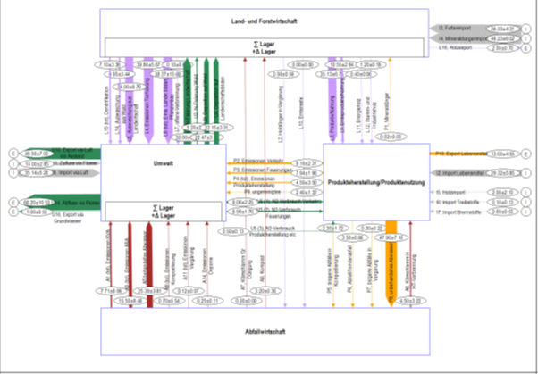

Shiny in Quarto
Was ist Massen- und Substanzflussanalyse?
«Die Stoffflussanalyse ist eine Methode zur Erfassung, Beschreibung und Interpretation von Stoffwechselprozessen»(Baccini & Bader, 1996, p. 35). Sie lässt sich in vier Schritten zusammenfassen(Baccini & Bader, 1996).
Auswahl des Systems: In diesem entwurfsmässigen schritt wird das System definiert. Dieses ist durch Prozesse, Güter und mindestens einen Stoff beschrieben.
Messung der Güterflüsse. In diesem Schritt werden die Daten erhoben.
Berechnung der Stoffflüsse. In unserem Fall mit STAN.
Schematische Darstellung und Interpretation des Models.
Prozesse stehen herbei für Eingriffe wie Transport, Umwandlung, Lagerung und Wertveränderungen von Stoffen oder Gütern (Baccini & Bader, 1996, p. 35). Stoffe sind entweder chemische Elemente oder chemische Verbindungen, die in der Natur vorkommen (Baccini & Bader, 1996). Güter hingegen sind Stoffe oder Stoffgemische, die vom Menschen wirtschaftlich bewertete Funktionen erfüllen (Baccini & Bader, 1996, p. 35). Mit anderen Worten: Stoffe sind die chemischen Grundbausteine, während Güter die Stoffe oder Stoffgemische sind, die einen wirtschaftlichen Wert haben und vom Menschen für bestimmte Zwecke verwendet werden. Güter können also aus verschiedenen Stoffen bestehen und werden entsprechend ihrer wirtschaftlichen Bedeutung bewertet und verwendet.
Stärken der Stoffflussanalysen sind unteranderem; Die mathematische Modellierung von Systemen zur Vorhersage und Abschätzung der zeitlichen Entwicklung von Abflüssen und Speichern für dynamische Modelle (quasistationär oder instationär) und Anwendungen auf verschiedenen Untersuchungsebenen, sei es auf nationaler Ebene (z.B. in der Schweiz), auf kantonaler oder kommunaler Ebene oder sogar auf Betriebsebene (Hellweg,2023). Weiger geeignet ist sie für den direkten Vergleich der Umweltauswirkungen verschiedener Produkte oder Aktivitäten innerhalb derselben Funktion (Hellweg, 2023). Für solche Analysen werden Ökobilanzen erstellt. Ausserdem eignet sie sich nicht für die quantitative Bewertung der Umweltauswirkungen von Produkten oder Stoffen. Hierfür kommt die Risikoanalyse zum Einsatz (Hellweg, 2023).
Anwendungsbeispiel: Biogene Güterflüsse in der Schweiz
Die Stoffflussanalyse findet in vielen Bereichen Anwendung, z.B. in der Chemie und im Ingenieurwesen, bei Produktionsprozessen, in der Wirtschaft (Baccini & Bader, 1996, p. 35). Nachfolgend sollen am Beispiel der Stickstoffflüsse in der Schweiz in einer Studie des BAFU die Möglichkeiten und Anwendungen einer Stoffflussanalyse aufgezeigt werden. Es wurde eine Stoffflussanalyse durchgeführt, um die Entwicklung der Stickstoffflüsse in der Schweiz bis 2020 zu analysieren in dem sie das Jahr 2020 mit 2005 und 1994 vergleicht. Es wurden verschiedene Szenarien untersucht, darunter ein Basisszenario und drei Wenn-Dann-Analysen, die zusätzliche politische und gesellschaftliche Entwicklungen berücksichtigen.
Ziel der Stoffflussanalyse ist es, die Menge und den Verlauf der Stickstoffflüsse in den verschiedenen Umweltkompartimenten (Luft, Boden, Wasser) zu quantifizieren und zu verstehen, wie sich diese Flüsse im Laufe der Zeit verändern. Die Analyse umfasst die Auswirkungen menschlicher Aktivitäten wie Verkehr, Industrie, Landwirtschaft und Haushalte auf die Stickstoffemissionen sowie die Auswirkungen dieser Emissionen auf Ökosysteme und die menschliche Gesundheit.
Die Ergebnisse der Analyse zeigen, dass die Reduktionsziele für Stickstoffverbindungen bis 2020 voraussichtlich nicht erreicht werden können und daher Handlungsbedarf besteht. Die wichtigsten Treiber für die prognostizierten Veränderungen der Stickstoffflüsse sind das Bevölkerungswachstum, der Import von Lebens- und Futtermitteln, der Einsatz von Mineraldünger sowie technische Fortschritte bei der Abgasreinigung. Der Bezug zum nachhaltigen Ressourcenmanagement besteht darin, dass Stickstoff ein Schlüsselelement für die belebte Natur ist und ein verantwortungsvoller Umgang mit diesem Element notwendig ist, um ökologische und gesundheitliche Schäden zu vermeiden. Die Stoffflussanalyse bietet eine solide Grundlage, um die Auswirkungen menschlicher Aktivitäten auf den Stickstoffkreislauf zu verstehen und gezielte Maßnahmen zu entwickeln, um die Stickstoffbelastung der Umwelt zu reduzieren und langfristig eine nachhaltigere Ressourcennutzung zu fördern. Ein besseres Management der Stickstoffflüsse kann den Schutz der Ökosysteme und das Wohlergehen von Mensch und Tier verbessern.
Beispiele für die Darstellung der Stoffflussanalyse sehen wie folgt aus:


Aufbau einer MFA und SFA
Etwas basierend auf der Vorlesung von Anders und der STAN Homepage. Fokus auf Begriffe und damit man danach ein einfaches erstes System machen kann
Güter
Flüsse
Systemgrenze
Usw.
Ein SFA-Modell besteht aus folgenden Komponenten:
Die Systemgrenze: Man muss klar definieren, welche Daten räumlich und zeitlich in die Analyse einfliessen. Räumlich meint hierbei unteranderem die physische oder logistische Ausdehnung eines Unternehmens oder eine Landesgrenze. Zeitlich kann sich z.B, auf ein konkretes Geschäftsjahr beziehen.
Prozess:
Weitergehende Informationen und zusatz Lektüre
Selbsttest Quiz
Input widget
Here is the embedded Shiny app: